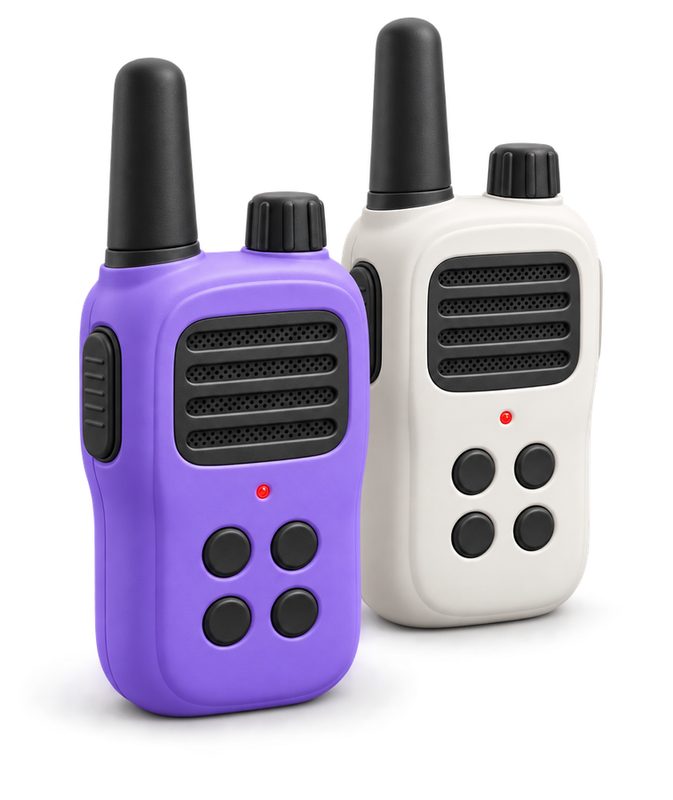

--------
Write your next movie
directly inside Google Docs™.
The writing workflow of Final Draft, the comfort of Google Docs.
Keep the best of both worlds, skip the $250 software.
No more lost pages when Final Draft crashes.
No more choosing between writing and collaborating.
 Add to Chrome
Add to Chrome- ✓Free to start
- ✓No credit card
- ✓Installs in seconds
Final Draft costs $249.99. It doesn't do collaboration. It doesn't run in your browser. It hasn't changed in 20 years. We built something better, inside the tool you already use.

Set up in under a minute.
Install it
Add the Chrome extension or the Google Docs add-on. It takes about ten seconds.
Open a Google Doc
Start a fresh script or paste a draft you already have. There is no new app to learn.
Just write
It formats every scene, character, and line as you type, so your script is ready to share or shoot.
It formats your script.
It doesn’t write it.
The tool takes care of margins, indents, scene headings and character cues. The words stay yours, and we never train anything on them.
Two features do use AI, a table read with synthetic voices and a production breakdown, and you decide when to run them. Nothing gets written in your place.
Guarded by Google.
Not by us.
Your script lives in your own Google Drive, behind the same security as Gmail. We never store it, and we never see it.

Rated 4.8 out of 5.
22 reviews on Google Workspace, 9 on the Chrome Web Store.
"I've been using this extension for several years now and it has served my purposes. I have tried many other apps on various platforms and, while many can do the basics, there always seems to be unnecessary hoops to jump through or, outrageous subscriptions you need to keep forever if you want access to your own work."
"I ran into a formatting issue, brought it to the attention of the apps author and received an immediate response and, solution shortly thereafter. Customer service like this is becoming rare but, I am happy to find it here. I'm currently writing my sixth script using this extension and I could not be happier with it."
Write together.
In real time.
Final Draft can't do this. Comments, suggestions, live co-writing with multiple cursors: your co-writer is already in the room, because it's Google Docs.
- ✓Live co-editing with multiple cursors
- ✓Comments and suggestions built in
- ✓No file sharing, no merging, no conflicts

Every tool, right inside Google Docs.
No new software to learn. It all lives in one sidebar.
Live formatting
Type, and scene headings, action, and dialogue format themselves as you go.
Format My Document
Paste a messy draft and format the whole script in one click.
Scene Board
Every scene on a card. Drag to reorder and your script rewrites itself.
Screenplay Preview
See your script as a real printed page while you write.
ElevenLabs Table Read
Hear your screenplay out loud, with a different AI voice for each character.
Movie Poster
Turn your script into a movie poster, made from your own story.
Production Breakdown
Cast, props, wardrobe, and SFX pulled from every scene in one click.
Final Draft export
Export to industry-standard .fdx, ready to send to anyone.
A screenwriter built it, because he needed it.
I'm Hugo P. Thomas, a French writer and director. My first feature, Willy 1er, premiered at the Cannes Film Festival in the ACID selection. My second, Juniors, screened at festivals around the world. Both are on Netflix.
I wrote those films in Google Docs and spent years fighting the formatting instead of the scenes. So I built the tool I wanted, and I still answer the support emails myself.

Hugo P. ThomasMore about this
Start writing today
Screenplay Editor installs in seconds. Start free, then $7.99 a month for the Chrome extension or $5.99 for the Google Docs add-on. Cancel anytime.
- ✓Free to start
- ✓No credit card
- ✓Installs in seconds
- ✓Secured by Google, not us